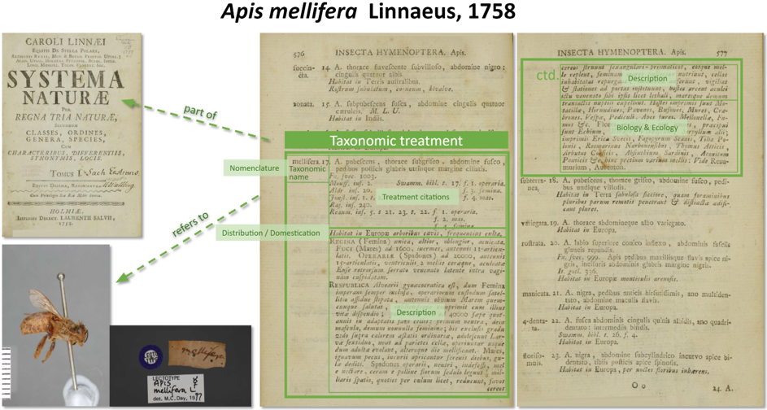

What is a Treatment?

The Plazi TreatmentBank deals with scientific, published, biosystematic literature documenting and describing all the world’s ca 1.9 Million known species in an estimated corpus of more than 500 Million published pages. The cited publications in Plazi are all available at the Biodiversity Literature Repository at Zenodo/CERN.
Treatments are well-defined parts of articles that describe the particular usage of a scientific name by an author at the time of the publication. In other words, each scientific name has one or more treatments, depending on whether there exists only an original description of a species, or there are subsequent re-descriptions. Similar to bibliographic references, treatments can be cited, and subsequent usages of names cite earlier treatments.
Treatments are a synthesis of the knowledge of a given species at a given time. They can be very rich in data, explicitly or implicitly, detailed or summarized, and include many references to external data sources, such as scientific names, collection codes, or DNA-codes.
The data can be semantically enhanced, and linked. But treatments, as parts of publication, first need be identified and extracted. Most recently, treatments are tagged in electronic publications with the National Library of Medicine’s Journal Article Tag Suites (JATS) TaxPub extension which allows for their automatic extraction. Still, the majority of the ca. 2000 journals and books publishing treatments use the PDF format at best. Plazi has the tools to extract treatments, enhance the embedded data and import it into TreatmentBank for public access where they may be viewed as HTML, XML, RDF, or harvested with the protocols provided below. The data are also provided for harvesting as Darwin Core-Archives.
Further information
-
Catapano T 2010. TaxPub: An Extension of the NLM/NCBI Journal Publishing DTD for Taxonomic Descriptions. Proceedings of the Journal Article Tag Suite Conference 2010 DOI: 10.5281/zenodo.3484285 Article